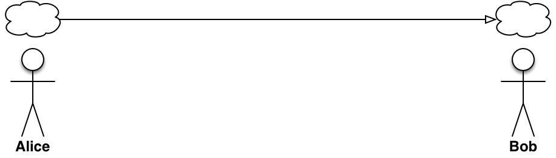
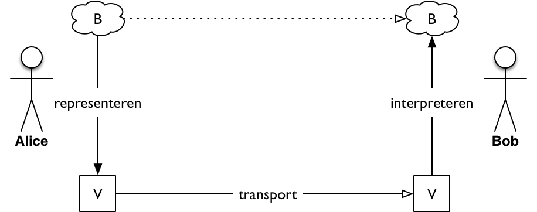

Een eerste model¶
Onder communicatie verstaan we het overbrengen van informatie tussen twee of meer agents. Een agent is bijvoorbeeld een mens, een dier, een computer, of een ander apparaat.
We beginnen met de communicatie tussen 2 agents, Alice en Bob, in één richting. Alice wil een bericht met een bepaalde betekenis overbrengen naar Bob.
{kind=link}
Voor het overbrengen van dit bericht moet Alice dit bericht beschrijven (representeren) in een vorm die (i) getransporteerd kan worden naar Bob; en die (ii) Bob kan begrijpen (interpreteren). Deze vorm kan bijvoorbeeld een tekst zijn op een propje papier dat Alice door de klas schiet. Helaas kan Alice een bericht niet rechtstreeks naar Bob overbrengen, bijvoorbeeld via telepathie.
{kind=link}
De stappen bij communicatie zijn:
- representeren: van betekenis naar vorm
- transporteren van de vorm
- interpreteren: van vorm naar betekenis
We kijken eerst naar het transport. De interpretatie door Bob bespreken we later. Bij dit transport speelt de betekenis van de vorm geen rol: het transport moet er voor zorgen dat de vorm ongeschonden bij Bob aankomt. We spreken daarom van datatransport.
Voorbeelden. We geven hier naast de vorm en de manier van transport, ook de afstand die je ermee kunt overbruggen, en de tijd die nodig is voor het transport. Deze laatste twee bepalen vaak het soort communicatie dat je kiest.
| Vorm | Transport | Afstand | Tijd |
|---|---|---|---|
| tekening op papier | propje door het lokaal | 5 m | 1 s |
| gesproken bericht | door de lucht in het lokaal | 1-10 m | 0.1 s |
| gesproken bericht | via telefoon | 1 m-50.000 km | 0.1-1 s |
| tekstbericht | via WhatsApp | 1 m-50.000 km | 2 - 120 s |
| tekstbericht | via e-mail | 1 m-50.000 km | 0.1 - 10 h |
Te doen
- begrip kanaal introduceren (in eerste model, of later?)
- aan de hand van dit model het verschil uitleggen tussen analoge communicatie,
en communicatie met computers:
- analoog: analoge vorm, beperkte mogelijkheden om deze om te zetten
- specifieke vormen voor spraak, beeld (telefonie, radio, televisie)
- computers: (i) universele vorm; (ii) transformeren van vormen.